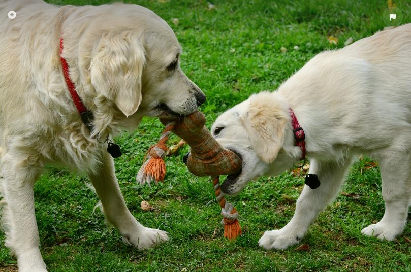
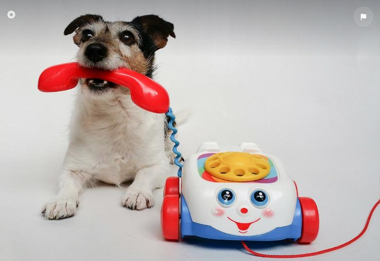

In the Puppy Garden you will find all the little, scandalous, fluffy, cute, hungry, curious, playful, cuddly, crazy, lazy, sneaky, naughty, stubborn, perfect, loving, four-legged angels.

Just around the corner you will find various toys, beds, little houses, collars, leashes and treats for those adorable cuties

And we provide the proper healthy, training and other various services for those needy babies.